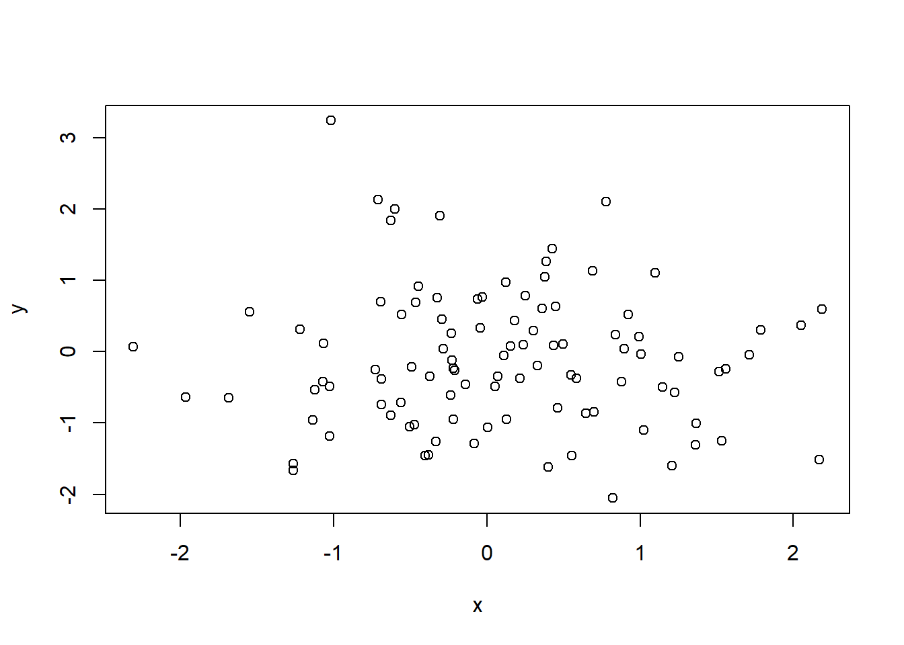
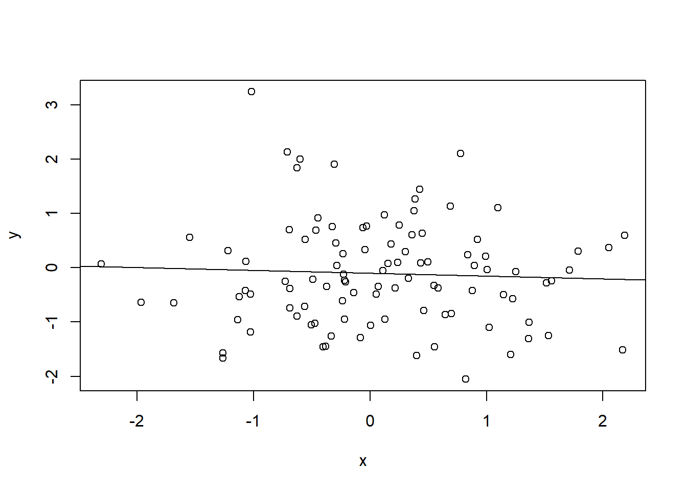

Uma das maiores potencialidades do R é o vasto conjunto de facilidades que ele oferece para realizarmos análises de dados – e, particularmente, para estimarmos modelos de regressão.1 Neste pequeno guia, veremos um dos modelos mais básicos, mas também um dos mais utilizados, de regressão: o modelo linear simples estimado por mínimos quadrados ordinários (MQO).2 Entre outros, aprenderamos a estimar relações lineares bivariadas; a usar a função básica para rodar modelos lineares, lm; e a obter resultados detalhados de um modelo.
Podemos usar gráficos para visualizar relações entre variáveis. Podemos, por exemplo, criar duas variáveis contínuas, geradas aleatoriamente com a função rnorm, e plotar sua relação com um gráfico de pontos.
set.seed(123) # Para replicar o conteudo da aula
x <- rnorm(100)
y <- rnorm(100)
plot(y ~ x)
É possível ver que as variáveis que criamos, y e x, não parecem ter relação. Na verdade, os pontos no gráficos estão dispersos, o que dificulta detectar algum padrão.
Para investigarmos isso detidamente, usamos um modelo linear estimado por mínimos quadrados ordinários (MQO). A função que estima esse tipo de modelo chama-se lm, e ela está contida no R-base. Portanto, não precisamos carregar nenhum pacote para usá-la, basta executar o seguinte código:
lm(y ~ x)##
## Call:
## lm(formula = y ~ x)
##
## Coefficients:
## (Intercept) x
## -0.10280 -0.05247A utilização da função lm é simples. Em primeiro lugar, precisamos passar como argumento da função uma fórmula contendo a especificação do nosso modelo. No exemplo, y é nossa variável dependente e, assim, aparece do lado direito do operador ~. x, dessa forma, é nossa variável independente, ou explicativa, ou, ainda, preditora.
Podemos salvar os resultados de um modelo em um objeto para facilitar a sua manipulação.
meu_modelo <- lm(y ~ x)Uma das vantagens disso é que, agora, podemos usá-lo para traçar um reta com valores preditos de y em relação a x, que resume a relação entre ambas, no gráfico que criamos anteriormente. Para tanto, usamos apenas a função abline.
plot(y ~ x)
abline(meu_modelo)
Realmente, não parece haver relação substantiva entre y e x, como indica a melhor reta estimada via MQO.
Para examinarmos formalmente a relação entre y e x, vamos recorrer novamente à função lm. Dessa vez, vamos nos deter um pouco mais nos resultados armazenados em meu_modelo:
meu_modelo##
## Call:
## lm(formula = y ~ x)
##
## Coefficients:
## (Intercept) x
## -0.10280 -0.05247Essa chamada resulta em um output que pode ser resumido em duas partes:
Call:, a função lm apenas exibe a chamada que usamos para rodar nosso modelo, incluindo aqui a fórmula usada;Coefficients:, indicando a estimativa dos parâmetros, ou coeficientes, do efeito da variável independente, x, sobre a variável dependente, y, além de um intercepto (ou constante), que indica o valor de esperado de y quando x = 0.Apenas avaliar um modelo pelos seus coeficientes norlamente não é o suficiente. Usando nosso modelo estimado e salvo em meu_modelo, podemos facilmente dar um passo adiante e fazer inferências (estatística, não causal) a partir deles, considerando a incerteza na estimação dos nossos parâmetros.
Para tanto, o R dispõe de uma função, que é carregada por padrão a partir do pacote stats, chamada confint. Com ela, é possível calcular um intervalo de confiança de 95% (ou qualquer outro valor) para os coeficientes de nosso modelo.
confint(meu_modelo, level = 0.95)## 2.5 % 97.5 %
## (Intercept) -0.2963902 0.0907841
## x -0.2645688 0.1596255A função retorna os intervalos mínimo e máximo de cada estimativa, o que pode ser usado para fazer afirmações do tipo de que, com 95% de probabilidade, nossa estimativa do efeito de x sobre y está situada no intervalo indicado por 2.5 % e 97.5 %.
Para alterar a cobertura do intervalo de confiança, basta modificar o valor passado ao argumento level da função (0.95 equivale a um intervalo de 95%):
confint(meu_modelo, level = 0.90)## 5 % 95 %
## (Intercept) -0.2647918 0.05918568
## x -0.2299490 0.12500580Ainda que exibir os resultados da forma como fizemos seja útil para uma inspeção rápida, existem outras informações úteis que precisamos acessar para avaliarmos um modelo. Para obtê-las, usamos a função summary, que já vimos anteriormente.
summary(meu_modelo)##
## Call:
## lm(formula = y ~ x)
##
## Residuals:
## Min 1Q Median 3Q Max
## -1.9073 -0.6835 -0.0875 0.5806 3.2904
##
## Coefficients:
## Estimate Std. Error t value Pr(>|t|)
## (Intercept) -0.10280 0.09755 -1.054 0.295
## x -0.05247 0.10688 -0.491 0.625
##
## Residual standard error: 0.9707 on 98 degrees of freedom
## Multiple R-squared: 0.002453, Adjusted R-squared: -0.007726
## F-statistic: 0.241 on 1 and 98 DF, p-value: 0.6246Afora a linha iniciada por Call:, que já vimos, essa função retorna uma série de novas informações. Duas merecem destaque:
Coefficients: reporta informações sobre as estimativas e inferências de nosso modelo, incluindo aqui a estimativa do efeito de nossas variáveis independentes e intercepto (abaixo de Estimate); o erro-padrão (Std. Error) de cada estimativa, que indica a incerteza envolvida nelas (e é usada no cálculo de intervalos de confiança); T-valor, t value, uma métrica normalmente usada para calcular P-valores em modelos de regressão (i.e., que é igual à estimativa divido pelo erro-padrão); e, finalmente, P-valor, Pr(>|t|), a famosa estatística usada para testar se o efeito indicado por cada estimativa é (P-valor > 0.05) ou não (P-valor < 0.05) fruto de variação aleatória.3;Multiple R-squared: e Adjusted R-squared: são métricas simples que indicam a quantia de variação explicada pelo nosso modelo, onde 1 indica que toda a variação é explicada (e, logo, nossas variáveis predizem perfeitamente os valores de Y).Assim como outras informações no R, nosso modelo salvo no objeto meu_modelo contém diversas informações dentro dele. Por exemplo, podemos extrair um vetor com nossas estimativas usando:
meu_modelo$coefficients## (Intercept) x
## -0.10280305 -0.05247161Essa e outras informações salvas dentro do objeto podem ser vistas com names:
names(meu_modelo)## [1] "coefficients" "residuals" "effects" "rank"
## [5] "fitted.values" "assign" "qr" "df.residual"
## [9] "xlevels" "call" "terms" "model"Também é possível salvar o output da função summary para fazer a mesma coisa.
resumo <- summary(meu_modelo)Feito isso, temos à disposição todas as estatísticas reportadas pela função summary dentro de um mesmo objeto, o que pode ser usado, por exemplo, para extrair rapidamente apenas o R-quadrado de nosso modelo, como abaixo.
resumo$r.squared## [1] 0.002453434Embora estatísticas como essa não sejam úteis em análises que fazem inferência causal – afinal, não queremos fazer predições –, a ideia por detrás desse procedimento pode ser utilizada em diversas situações.
Por exemplo, o R CRAN Task View fornece vários compilados com materiais e pacotes para R sobre temas como análise de séries temporais e econometria (que nada mais é do que um subconjunto de ferramentas estatísticas mais apropriadas para análises normalmente feitas nas Ciências Sociais).↩
Para um explicação rápida de como esse método de estimação funciona, ver aqui.↩
A título de curiosidade, o P-valor é calculado com base na estatística T de cada variável e outra informação que não cobriremos aqui, os graus de liberdade do modelo.↩